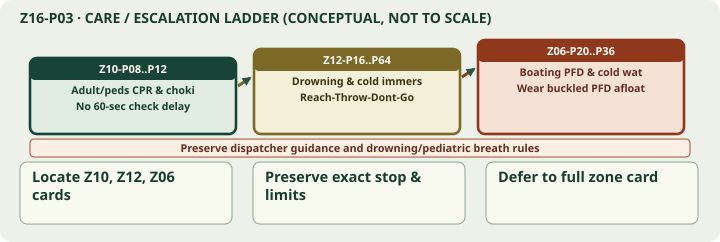

Z16-P03 · Field reference atlas · New manuscript
Airway, CPR, Choking and Drowning Resuscitation Cross-Reference
Locate the original encyclopedia cards for airway, CPR, Choking and Drowning Resuscitation Cross-Reference.
When it applies · Offline reference lookup. The linked chapter defines the situation, audience and limits.
Equipment · Offline reader or the complete linked source cards in print.

Actions
- Open Z10-P08 for activate 911, AED, and dispatcher-guided CPR for cardiac arrest; Z10-P09 for respond to severe choking while avoiding blind finger sweeps.[A10, M03, M04]
- Open Z10-P44 for monitor submersion survivors for delayed breathing deterioration; Z12-P18 for reject six false signs of safe ice including tracks, snowmobiles and clear cold air.[A10, M26, X01]
- Read the linked card’s applicability, equipment and stop conditions together. Keep review and source limitations attached to any excerpt.[A10, ED]
Failure recognition · Acting on a keyword or title while overlooking an upstream exception or stop condition.[A10, ED]
Verify · Confirm the exact page ID and read the full conditions before using the reference.[A10, ED]
Stop or change course · If someone is unresponsive and not breathing normally, call 911 and follow dispatch. Tell dispatch the person’s age and whether submersion was involved. Follow age- and cause-specific care.[A10, M03, M25, M26]
Evidence and editorial notes
- A10 · FEMA / Ready.gov · Make a Plan (current web edition)
- Section: Offline reader navigation, historical lineage, and HOLD transparency · Conditions: Using the complete 16-zone offline archive, zone readers, and print proofs
Support: Navigation aids expose draft status, reconstruction lineage, open diagnostic photo needs, and pending specialist holds on every lookup path.
Limitations: This index entry does not independently establish any safety, regulatory or diagnostic instruction. · Conflicting evidence: None noted.
Editorial note: Index design and cross-reference policy. Substantive directions come from linked upstream chapter claims. · Specialist reviewer: Accessibility, print QA, and editorial reviewer
Primary source · checked 2026-11-24 - M03 · American Heart Association · 2025 Adult Basic Life Support (2025)
- Section: Figure 2 Adult Basic Life Support Algorithm for Lay Rescuers; 6.1 Recognition of Cardiac Arrest · Conditions: Unresponsive adult with absent or abnormal breathing; early dispatch and AED access
Support: Recognize gasps as abnormal, activate EMS, start CPR and use an AED promptly. Follow prompts and resume after analysis or shock.
Limitations: Pediatric and drowning arrest require their own training or dispatch prompts; the adult cardiac-arrest algorithm is not all-age guidance. · Conflicting evidence: See A02 claim audit for boundaries.
Editorial note: Distinguishes lay activation and dispatcher-guided CPR from advanced life support. · Specialist reviewer: EMS and resuscitation specialist
Primary source · checked 2026-11-25 - M04 · American Heart Association · 2025 Adult Basic Life Support (2025)
- Section: 10 Adult Foreign-Body Airway Obstruction, sections 10.1–10.3 · Conditions: Responsive adults with mild or severe airway obstruction; separate unresponsive branch
Support: Watch an effective cough. Activate EMS for severe signs and provide trained or dispatcher-directed care. Begin CPR when unresponsive and avoid blind finger sweeps.
Limitations: Infants and children require the pediatric protocol. Pregnancy and inability to encircle the abdomen change thrust technique. · Conflicting evidence: See A02 claim audit for boundaries.
Editorial note: Keeps airway maneuvers bounded by formal training and 911 dispatcher guidance. · Specialist reviewer: EMS and emergency medicine
Primary source · checked 2026-11-25 - M25 · American Heart Association · 2025 Pediatric Basic Life Support (2025)
- Section: Recognition of cardiac arrest; Pediatric foreign-body airway obstruction · Conditions: Infant or child lay emergency
Support: Use pediatric CPR and choking guidance with dispatcher or training. Infant chest thrusts differ from older-child abdominal thrusts; avoid blind sweeps.
Limitations: Adult pregnancy and abdominal encirclement exceptions are in M04. Escalate equipment fit and age transitions. · Conflicting evidence: See A02 claim audit for boundaries.
Editorial note: Added in A02 to separate a consequential source boundary. · Specialist reviewer: Pediatric EMS and resuscitation
Primary source · checked 2026-11-25 - M26 · AHA and AAP · Focused Update on Resuscitation Following Drowning (2024)
- Section: Recommendations for CPR following drowning · Conditions: Adult or child with arrest after removal from water
Support: Provide rescue breaths with compressions when able and follow dispatcher; a rescuer unable to give breaths should still start compressions promptly.
Limitations: This source addresses resuscitation. Symptomatic submersion requires EMS direction; it does not establish a universal discharge observation time. · Conflicting evidence: See A02 claim audit for boundaries.
Editorial note: Added in A02 to separate a consequential source boundary. · Specialist reviewer: Wilderness medicine and aquatic EMS
Primary source · checked 2026-11-25 - X01 · Minnesota DNR · General Ice Thickness Guidelines (current web edition)
- Section: General Ice Thickness Guidelines > New Clear Ice Only · Conditions: Minnesota lakes and ponds during stable winter freezing
Support: Agency thickness guidelines apply ONLY to new, clear solid ice and are NEVER a guarantee of safety; white snow-ice is roughly half as strong, and currents, springs, inlets, outlets and snow cover create hidden thin zones.
Limitations: No ice is 100% safe; one drilled thickness check does not clear an entire crossing route. · Conflicting evidence: Directly reconciles B013 P01–P05, P11 and P17 with MN DNR warnings.
Editorial note: Enforces non-guarantee ice boundaries across Z12. · Specialist reviewer: Ice safety and winter search and rescue
Primary source · checked 2026-11-24
Source lineage · New manuscript (Z16 P20 emergency index) · Classification · New manuscript.